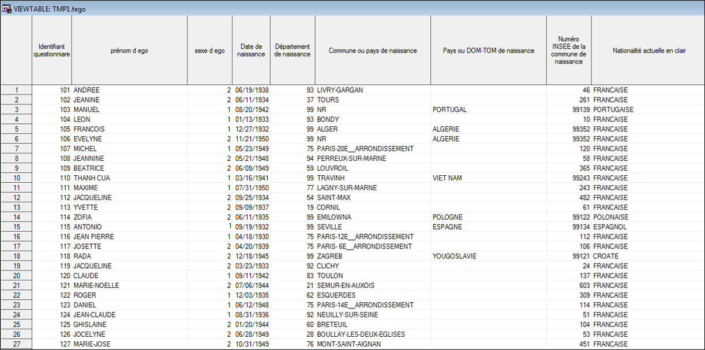
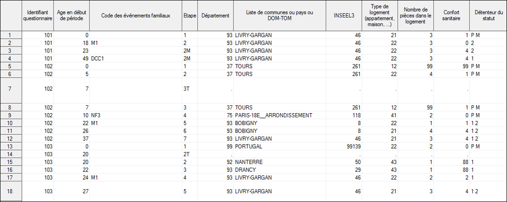
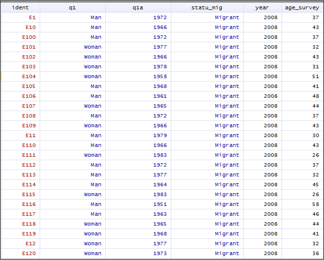
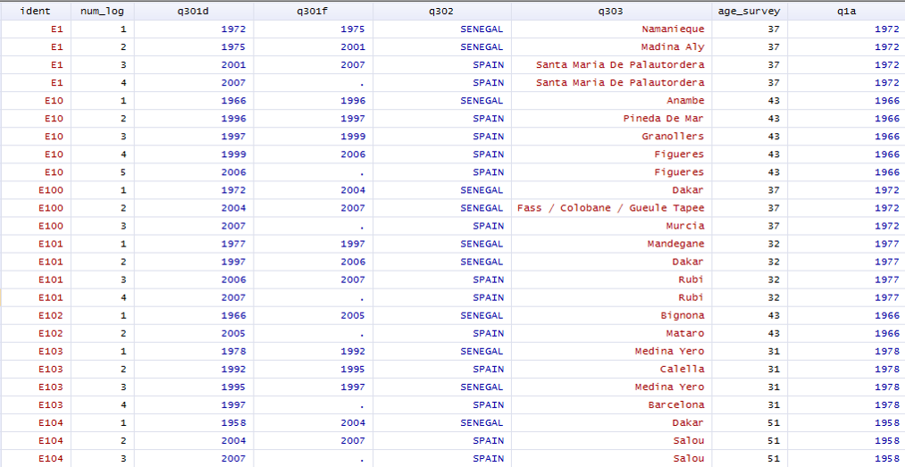

Les Données
On distingue deux types de données : les données prospectives et rétrospectives:
Données prospectives et rétrospectives
Les données prospectives
- Individus suivis à des dates successives.
- Instrument de mesure identique à chaque vague (si possible).
- Avantages: qualité des données (moins de biais de mémoire).
- Inconvénients: coût important, délais pour les exploiter dans une analyse, mêmes hypothèses entre deux passages pas forcément respectées, problèmes d’attrition, problèmes liés aux âges d’inclusion.
A noter l’exploitation croissante des données administratives qui peuvent regorger d’informations biographiques. Déjà disponibles, le problème du coût de collecte est contourné. Ce type de données comprend par exemple les informations issues des fichiers des Ressources Humaines des entreprises, qui sont par exemples actuellement exploitées à l’Ined, par exemple dans le cadre du projet « worklife » (https://worklife.site.ined.fr/). Elles engendrent en revanche des questionnements techniques liésà l’inférence ((on ne travaille directement pas sur des échantillons).
Les données rétrospectives
- Individus interrogés une seule fois.
- Recueil de biographies thématiques depuis une origine jusqu’au moment de l’enquête.
- Recueil d’informations complémentaires à la date de l’enquête (âge, sexe, csp au moment de l’enquête et/ou csp représentative).
- Avantages: Information longitudinale immédiatement disponible, “faible” coût.
- Inconvénients Questionnaire long, informations datées qui font appel à la mémoire de l’enquêté.e. A de rares exceptions (enfant, mariage), il est difficile d’aller chercher des datations trop fines avec une retrospectivité assez longue.
Les deux types de recueil peuvent être mixés avec des enquêtes à passages répétés comprenant des informations retrospectives entre 2 vagues (Exemple: la cohorte Elfe de l’Ined-Inserm ou la Millenium-Cohort-Study en Grande Bretagne).
Grille AGEVEN
Pour recueillir des informations biographiques retrospectives, on utilise généralement la méthode des grilles AGEVEN.
Il s’agit d’une grille âge-évènement, de type chronologique, avec des repères temporels en ligne (âge, année). En colonne, sont complétés de manière progressive et relative, les évènements relatifs à des domaines, par exemple la biographie professionnelle, familiale, résidentielle…
Références:
- Antoine P., X. Bry and P.D. Diouf, 1987 “La fiche Ageven : un outil pour la collecte des données rétrospectives”, Statistiques Canada 13(2).
- Vivier G, “Comment collecter des biographies ? De la fiche Ageven aux grilles biographiques, Principes de collecte et Innovations récentes”, Acte des colloques de l’AIDELF, 2006.
- GRAB, 1999, “Biographies d’enquêtes : bilan de 14 collectes biographiques”, Paris, INED.
Exemple grille Ageven page 121: <http://retro.erudit.org/livre/aidelf/2006/001404co.pdf<
Enregistrement des données
La question du format des fichiers biographiques mis à disposition n’est pas neutre, en particulier au niveau des manipulations pour la créer le fichier d’analyse, opération qui pourra s’avérer particulièrement chronophage et complexe si plusieurs modules doivent être appariés. On distingue trois formats d’enregistrement.
Large [format individu]
Une ligne par individu, qui renseigne sur une même ligne tous les évènements liés à un domaine : les datations et les caractéristiques des évènements.
Exemple: domaine : unions - échelle temporelle: année - fin de l’observation en 1986:
| id | debut1 | fin1 | cause1 | début2 | fin2 | cause2 |
|---|---|---|---|---|---|---|
| A | 1979 | 1982 | décès conjoint | 1985 | . | . |
| B | 1983 | 1984 | Séparation | . | . | . |
Inconvénients: peut générer beaucoup de vecteurs colonnes avec de nombreuses valeurs manquantes. Le nombre de colonnes va dépendre du nombre maximum d’évènements. Si ce nombre concerne un seul individu, on va multiplier le nombre de colonnes pour un niveau d’information très limité. Situation classique, le nombre d’enfants, où les naissances de rang élevé deviennent de plus en plus rares.
Semi-long [format individu-évènements]
C’est le format le plus courant de mise à disposition des enquêtes biographiques. Si l’évènement est de type continu, par exemple le lieu de résidence, la date de fin de la séquence correspond à la date de début de la séquence suivante. Les dates de fin ne sont pas forcément renseignées sur une ligne pour des trajectoires continues, l’information peut être donnée sur la ligne suivante avec la date de début.
Pour la séquence en cours au moment de l’enquête, la date de fin est souvent une valeur manquante, une fin de séquence pouvant se produire juste avant l’enquête au cours d’une même année. Il est également possible d’avoir une information qui ne s’est pas encore produite au moment de l’enquête, mais qui aura lieu peu de temps après (personne enceinte, donc une naissance probable la même année).
Exemple précédent (trajectoires discontinues):
| id | debut | fin | cause | Numero séquence |
|---|---|---|---|---|
| A | 1979 | 1982 | décès conjoint | 1 |
| A | 1985 | . | . | 2 |
| B | 1983 | 1984 | Séparation | 1 |
Long [format individu-périodes]
Typique des recueils prospectifs. Ils engendrent des lignes sans information supplémentaire par rapport à la ligne précédente.
Exemple précédent:
| id | Année | cause | Numero séquence |
|---|---|---|---|
| A | 1979 | . | 1 |
| A | 1980 | . | 1 |
| A | 1981 | . | 1 |
| A | 1982 | Décès conjoint | 1 |
| A | 1985 | . | 2 |
| A | 1986 | . | 2 |
| B | 1983 | . | 1 |
| B | 1984 | Séparation | 1 |
Ici les trajectoires ne sont pas continues. Une forme continue présenterait toute la trajectoire, avec l’ajout d’un statut du type être en couple ou non. Pour ID=A, en 1983 et 1984, deux lignes « pas couple » (cohabitant ou non) pourraient être insérées avec au total 3 séquences.
Remarque : pour certaines analyses (par exemple analyse en temps discret), on doit transformer passer d’un format large ou semi-long à un format long, sur les durées observées ou sur des intervalles de durées construits.
Exemples de mise à disposition
Deux enquêtes biographiques de type rétrospectives produite par l’Ined, avec un fichier qui fournit des informations générales sur les individus (une ligne par individu), et une série de modules biographiques en format individus-évènements.
Enquête biographie et entourage (Ined)
https://grab.site.ined.fr/fr/enquetes/france/biographie_entourage/
Base sur les caractéristiques individuelles

Module biographique sur le logement et les lieux de résidence 
Enquête MAFE (Ined)
https://mafeproject.site.ined.fr/
Base sur les caractéristiques individuelles

Module biographique sur les lieux de résidence
